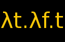

Projects
 Zelda Overworld Terrain Randomizer
Zelda Overworld Terrain Randomizer
A Common Lisp program (with a bit of Java) that shuffles up the
overworld terrain from
The Legend of Zelda to make new
overworlds. It can make an image of the new map and a playable
rom with the new overworld. Due to the nature of the project,
the rom isn't exactly a full game, though.

Lambda Calculus Interpreter
A lambda calculus interpreter written in Java with a terminal window
and an editor. Built for playing around with lambda calculus that
looks like lambda calculus. Not particularly powerful or robust.
 Hexmap Maker
Hexmap Maker
A Java program for making hexmaps. I wrote it in a couple days because
I wanted a tool to make a hexmap for a D&D campaign, didn't have an
immediately obvious option for such a program, and thought it would
be interesting to write one, so I wrote my own.